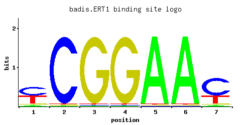
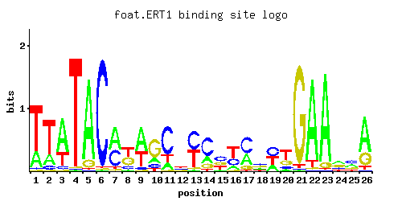
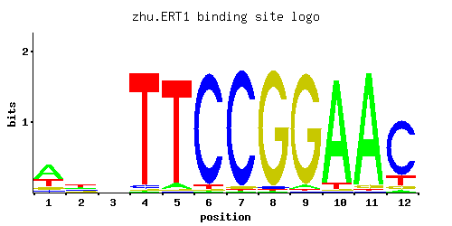
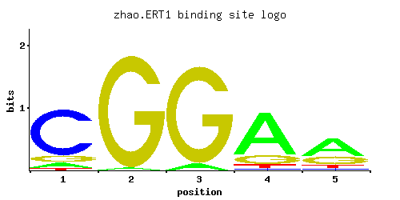

Transcriptional regulator of nonfermentable carbon utilization; GFP-fusion protein localizes to cytoplasm, nucleus; null mutation affects periodicity of transcriptional and metabolic oscillation; plays role in restricting Ty1 transposition
01 / RECOMMENDED MATRIX
Best-performing DNA-binding model. Fisher’s P-value 0.0009951
Information content 10.65
Max PWM score 9.51
Recommended cutoff 5.71
View and copy the recommended matrices ↘ Position frequency matrix (PFM) Copy
A | 0.086 0.013 0.010 0.014 0.958 0.955 0.048
C | 0.494 0.963 0.011 0.010 0.011 0.012 0.644
G | 0.069 0.014 0.969 0.967 0.015 0.021 0.046
T | 0.351 0.010 0.010 0.010 0.017 0.012 0.263
Position count matrix (PCM) Copy
A | 8 1 1 1 95 95 4
C | 49 96 1 1 1 1 64
G | 6 1 96 96 1 2 4
T | 35 1 1 1 1 1 26
Position weight matrix (PWM) Copy
A | -1.31 -3.20 -3.47 -3.13 1.10 1.09 -1.90
C | 1.01 1.68 -2.80 -2.89 -2.80 -2.71 1.27
G | -0.96 -2.55 1.68 1.68 -2.48 -2.15 -1.36
T | 0.09 -3.47 -3.47 -3.47 -2.94 -3.28 -0.20
02 / COMPARATIVE BENCHMARKS
Alternative candidate matrices 4 Historical matrix candidates from the original ScerTF database. Expand a source to inspect its original logo, scores, and matrix values.
ERT1 Badis et. al. P = 0.001164 View matrix ↘ 
Fisher’s P-value 0.001164
Information content 10.95
Max PWM score 9.49
Recommended cutoff 5.46
Position frequency matrix (PFM) Copy
A | 0.06 0.01 0.01 0.01 0.97 0.97 0.04
C | 0.47 0.97 0.01 0.01 0.01 0.01 0.64
G | 0.06 0.01 0.97 0.97 0.01 0.01 0.04
T | 0.41 0.01 0.01 0.01 0.01 0.01 0.28
Position count matrix (PCM) Copy
A | 6 1 1 1 97 97 4
C | 47 97 1 1 1 1 64
G | 6 1 97 97 1 1 4
T | 41 1 1 1 1 1 28
Position weight matrix (PWM) Copy
A | -1.67 -3.47 -3.47 -3.47 1.11 1.11 -2.08
C | 0.96 1.68 -2.89 -2.89 -2.89 -2.89 1.27
G | -1.10 -2.89 1.68 1.68 -2.89 -2.89 -1.50
T | 0.25 -3.47 -3.47 -3.47 -3.47 -3.47 -0.13
ERT1 Foat et. al. P = 1 View matrix ↘ 
Fisher’s P-value 1
Information content 18.77
Max PWM score 23.63
Recommended cutoff 17.72
Position frequency matrix (PFM) Copy
A | 0.24 0.20 0.66 0.01 0.90 0.01 0.53 0.05 0.58 0.17 0.16 0.17 0.03 0.21 0.07 0.15 0.34 0.20 0.26 0.10 0.01 0.90 0.92 0.38 0.30 0.68
C | 0.02 0.08 0.06 0.01 0.01 0.97 0.40 0.14 0.06 0.14 0.66 0.27 0.48 0.60 0.41 0.29 0.52 0.37 0.38 0.13 0.01 0.01 0.01 0.17 0.39 0.01
G | 0.01 0.02 0.01 0.01 0.09 0.01 0.03 0.40 0.02 0.62 0.01 0.24 0.05 0.15 0.27 0.05 0.12 0.28 0.01 0.25 0.95 0.02 0.06 0.32 0.19 0.25
T | 0.73 0.70 0.26 0.97 0.01 0.01 0.04 0.42 0.35 0.07 0.17 0.32 0.44 0.04 0.26 0.50 0.02 0.15 0.35 0.52 0.03 0.07 0.01 0.14 0.12 0.06
Position count matrix (PCM) Copy
A | 24 20 66 1 90 1 53 5 57 17 16 17 3 21 7 15 34 20 26 10 1 90 92 38 30 68
C | 2 8 6 1 1 97 40 14 6 14 66 27 48 60 41 28 52 37 38 13 1 1 1 17 39 1
G | 1 2 1 1 9 1 3 40 2 62 1 24 5 15 27 5 12 28 1 25 95 2 6 32 19 25
T | 73 70 26 97 1 1 4 42 35 7 17 32 44 4 26 50 2 15 35 52 3 7 1 14 12 6
Position weight matrix (PWM) Copy
A | -0.29 -0.47 0.72 -3.47 1.03 -3.47 0.50 -1.86 0.59 -0.63 -0.69 -0.63 -2.37 -0.42 -1.52 -0.76 0.06 -0.47 -0.21 -1.16 -3.47 1.03 1.06 0.17 -0.06 0.75
C | -2.20 -0.81 -1.10 -2.89 -2.89 1.68 0.80 -0.25 -1.10 -0.25 1.30 0.41 0.98 1.20 0.82 0.48 1.06 0.72 0.75 -0.33 -2.89 -2.89 -2.89 -0.06 0.77 -2.89
G | -2.89 -2.20 -2.89 -2.89 -0.69 -2.89 -1.79 0.80 -2.20 1.24 -2.89 0.29 -1.28 -0.18 0.41 -1.28 -0.41 0.44 -2.89 0.33 1.66 -2.20 -1.10 0.58 0.05 0.33
T | 0.82 0.78 -0.21 1.11 -3.47 -3.47 -2.08 0.27 0.09 -1.52 -0.63 0.00 0.32 -2.08 -0.21 0.45 -2.77 -0.76 0.09 0.49 -2.37 -1.52 -3.47 -0.83 -0.98 -1.67
ERT1 Zhu et. al. P = 0.006063 View matrix ↘ 
Fisher’s P-value 0.006063
Information content 15.02
Max PWM score 13.54
Recommended cutoff 8.28
Position frequency matrix (PFM) Copy
A | 0.54 0.27 0.25 0.01 0.05 0.01 0.01 0.01 0.03 0.92 0.95 0.03
C | 0.08 0.23 0.21 0.03 0.01 0.95 0.96 0.02 0.01 0.01 0.01 0.79
G | 0.13 0.15 0.25 0.01 0.01 0.01 0.02 0.96 0.95 0.01 0.03 0.05
T | 0.25 0.34 0.29 0.95 0.92 0.03 0.01 0.01 0.01 0.05 0.01 0.13
Position count matrix (PCM) Copy
A | 54 27 25 1 5 1 1 1 3 92 95 3
C | 8 23 21 3 1 95 96 2 1 1 1 79
G | 13 15 25 1 1 1 2 96 95 1 3 5
T | 25 34 28 95 92 3 1 1 1 5 1 13
Position weight matrix (PWM) Copy
A | 0.52 -0.17 -0.25 -3.47 -1.86 -3.47 -3.47 -3.47 -2.37 1.06 1.09 -2.37
C | -0.81 0.25 0.15 -1.79 -2.89 1.66 1.67 -2.20 -2.89 -2.89 -2.89 1.48
G | -0.33 -0.18 0.33 -2.89 -2.89 -2.89 -2.20 1.67 1.66 -2.89 -1.79 -1.28
T | -0.25 0.06 -0.10 1.09 1.06 -2.37 -3.47 -3.47 -3.47 -1.86 -3.47 -0.90
ERT1 Zhao and Stormo P = 0.002417 View matrix ↘ 
Fisher’s P-value 0.002417
Information content 6.734
Max PWM score 6.25
Recommended cutoff 4.38
Position frequency matrix (PFM) Copy
A | 0.089 0.053 0.001 0.001 0.025
C | 0.270 0.161 0.937 0.976 0.106
G | 0.063 0.035 0.001 0.001 0.781
T | 0.578 0.751 0.061 0.022 0.088
Position count matrix (PCM) Copy
A | 8 5 0 0 2
C | 27 16 93 97 10
G | 6 3 0 0 78
T | 57 75 6 2 8
Position weight matrix (PWM) Copy
A | -1.28 -1.80 -5.77 -5.77 -2.55
C | 0.41 -0.11 1.65 1.69 -0.53
G | -1.05 -1.64 -5.19 -5.19 1.47
T | 0.59 0.85 -1.66 -2.68 -1.29
03 / EXPERIMENTAL CONTEXT
Gene-level annotations and interactions. Genes bound in ChIP-chip experiments 1 genes No Data
Genes affected by TF deletion 1 genes No Data
Genes supported by both experiments 1 genes No Data